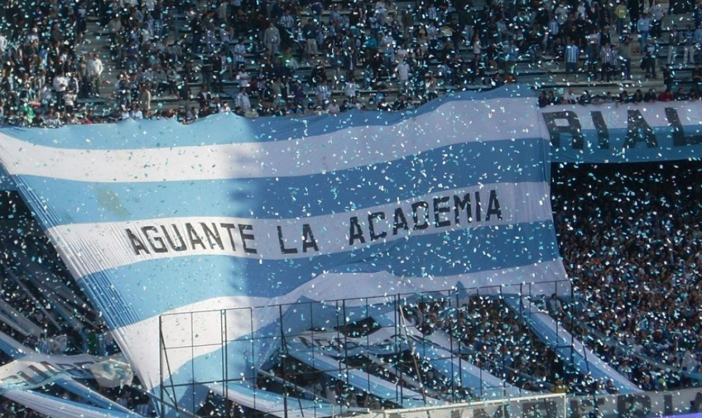
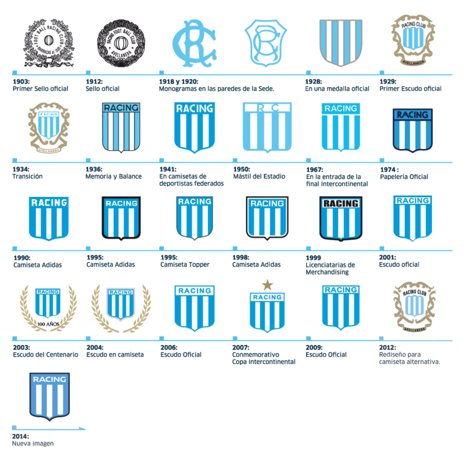
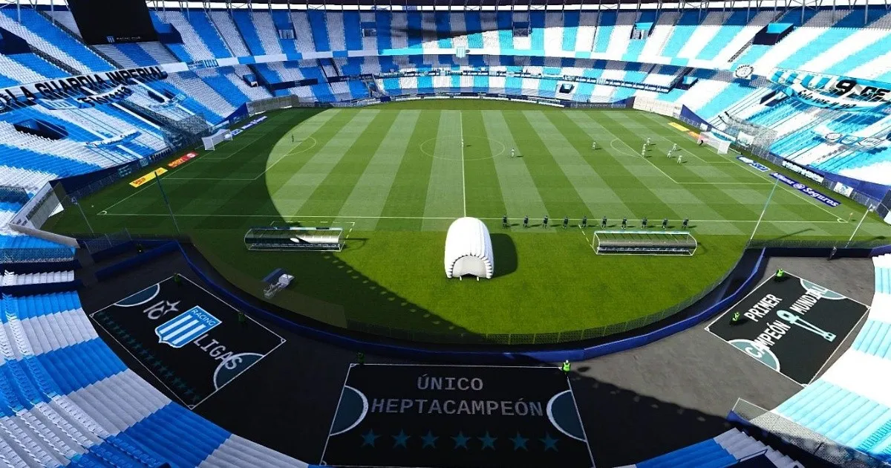
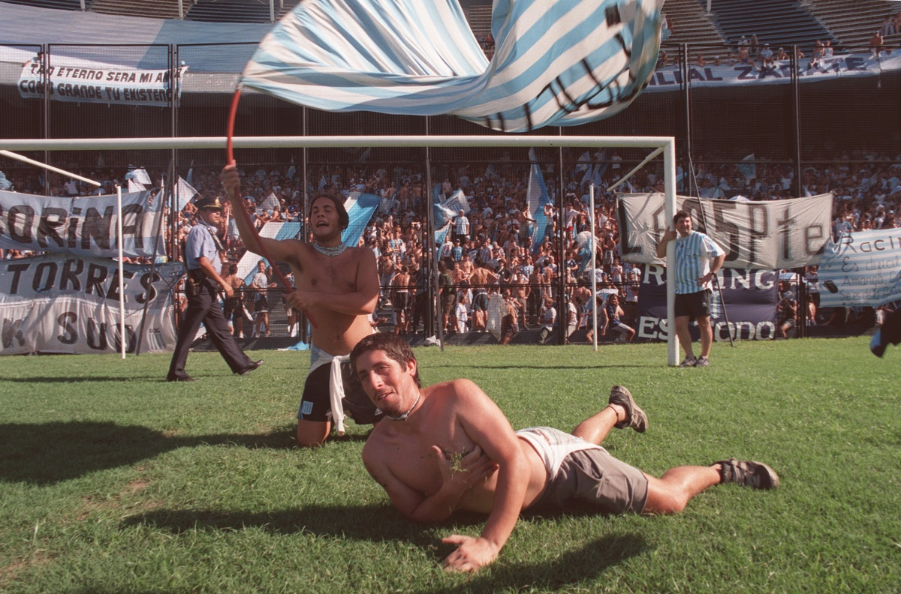

HISTORIA
Todo empezó en 1898, en el barrio de Barracas al Sud (hoy Avellaneda) cuando unos jóvenes trabajadores del Ferrocarril Sud comenzaron a juntarse para practicar el futbol. El 12 de mayo de 1901 formarían el Football Club Barracas al Sud, el cual un año más tarde, el 16 de marzo de 1902 se fragmentaría formando el Colorados Unidos del Sud. Luego de llegar a un acuerdo de paz entre ambas instituciones debido a que en solitario ninguna lograba el vuelo pretendido, se convencerían de que debían juntarse en un solo club más grande y poderoso. Fue así como en una reunión realizada el 25 de marzo de 1903, uno de los muchachos socios de ambos clubes: Germán Vidaillac, de ascendencia francesa, les mostraría a los presentes una revista de autos del país galo en cuya portada se leía la palabra: RACING. La moción sería aprobada clamorosamente por todos, por lo que quedaría conformado el Racing Football Club, con su estatuto aprobado el 7 de febrero de 1904 y siendo Arturo Artola su primer Presidente. En 1905, el club se afiliaría a la Argentine Football Association, convirtiéndose en la primera institución inscripta netamente criolla. El 18 de diciembre de 1910, luego de ganarle la final de la segunda división a Boca Juniors por 2 a 1 frente a 4000 personas, Racing conseguiría el ascenso a la Primera División de Argentina, justamente en el Centenario de la Revolución de Mayo, cambiando sus colores en homenaje por los mismos de la bandera Argentina: el celeste y el blanco.
SIMBOLOGÍA
ESTADIO
Su nombre oficial es Estadio Presidente Perón, aunque también es denominado como «El Cilindro de Avellaneda» o «El Coliseo». Sus denominaciones anteriores, surgieron debido a que su estructura es cilíndrica, perfectamente redonda y da un giro de 360.º. Se ubica sobre las calles Mozart y Corbatta en la localidad de Avellaneda en el sur del Gran Buenos Aires. Es el primer estadio de Argentina en tener la totalidad de sus gradas techadas. Además es el segundo estadio de mayor superficie en todo el país. Entre los estadios de Racing Club e Independiente, hay tan sólo 3 cuadras de distancia (300 metros) que los separan. Las dimensiones del campo de juego son de 105 × 70 metros. En un principio llegó a albergar hasta 120 000 personas pero las distintas remodelaciones redujeron dicha capacidad, contándose hoy en día con aforo para 17 000 espectadores en la bandeja superior, 6000 lugares entre plateas preferenciales y palcos en las áreas centrales de la bandeja inferior y 30 000 localidades populares para espectadores de pie: 19 000 en la cabecera sur y laterales de la bandeja inferior; 2000 en la bandeja alta sur y 9000 visitantes en la norte. La capacidad total en los sectores habilitados es de 55 000 espectadores, pudiendo llegar a 65 500.
HINCHADA
La hinchada de Racing Club apodada como «La n.º 1» es una de las más pasionales del fútbol argentino, siendo uno de los 4 clubes más convocantes del país. El día del hincha de Racing se celebra todos los 7 de marzo. Conmemorando que en ese día de 1999, los hinchas se autoconvocaron para llenar el estadio junto con las cedes como protesta ante la quiebra del club, sin que se disputara un partido, y logrando que la institución albiceleste continuara con sus actividades deportivas.
